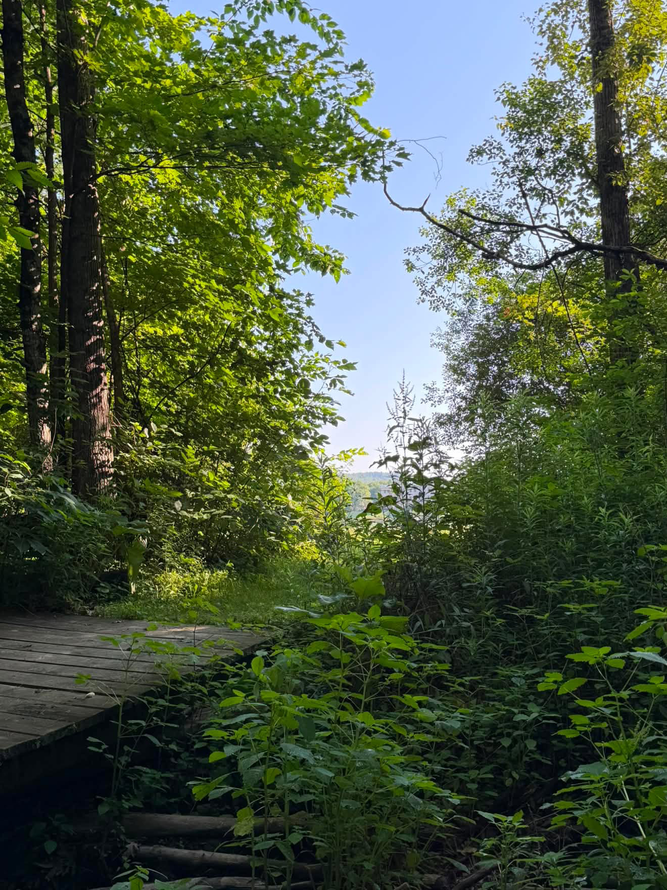
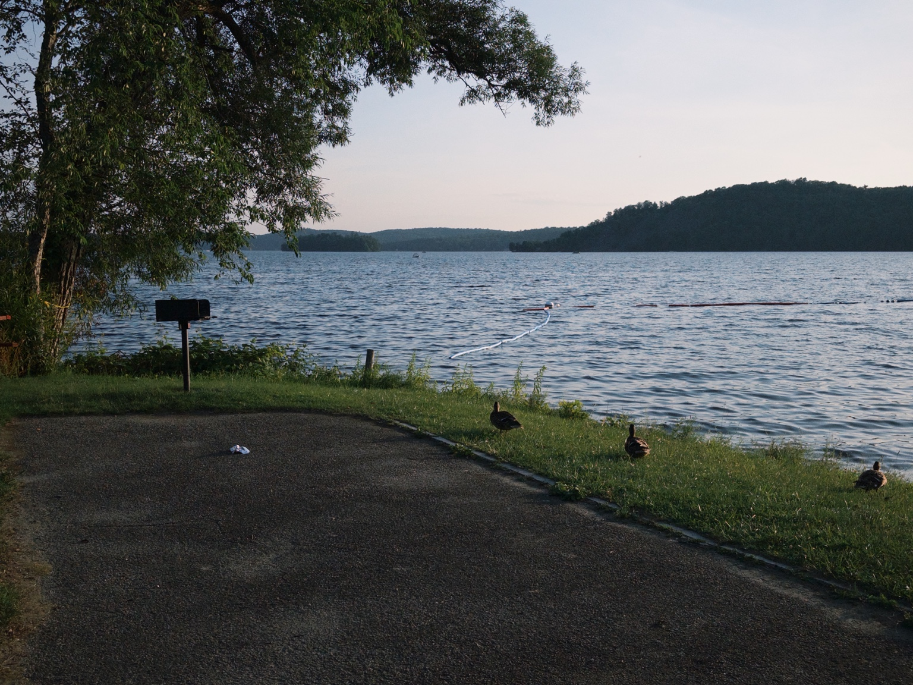

My Two Weeks at the Putney Columbia Climate School (Part 1)
July 27, 2026
A few weeks ago, I had the opportunity to attend the Putney Columbia Climate School, and it was honestly one of the coolest experiences I've ever had. Throughout the two-week program, I met so many amazing people, learned from Columbia climate experts, and got to see how climate change affects the world around us—not just through lectures, but through fieldwork and hands-on activities too.
Before going, I thought I already knew a lot about climate change. But by the end of the program, I realized there's so much more to it than just rising temperatures. Climate change connects to everything from farming and water quality to public health and our local communities. It also showed me that even as students, we can make a difference.
Day 1: Meeting Everyone
The first day was mostly about settling in. Since everyone was arriving at different times, we didn't have a packed schedule, which gave us lots of time to meet each other.
I was definitely a little nervous at first, but everyone was so friendly. By the end of the day, I had already met some amazing people who ended up becoming some of my closest friends during the program. Looking back, I'm really glad I stepped out of my comfort zone because those friendships made my whole experience even better.
Day 2: Learning Just How Big Climate Change Really Is
The second day started with orientation, where we took a few surveys to see how much we already knew about climate change. I thought I had a pretty good understanding of the topic, but those surveys—and everything we learned afterward—made me realize how broad climate science really is.
Our first lecture was with Laurel Zaima-Sheehy from Columbia, who talked about youth empowerment. One thing I really liked was how she emphasized that young people don't have to wait until they're adults to make a difference. We can start taking action now, even if it's something small.
After that, we had lectures from Aandishah Samara and Alex Parsells about the science behind climate change. We learned about greenhouse gases, climate systems, and why scientists are so confident that our climate is changing. It was really interesting to hear everything explained by experts who actually work in this field.
We also did a few activities throughout the day, and that night we ended up sitting outside on the field making s'mores together. It was the perfect way to end a long day of learning.
Day 3: From Climate Science to Taking Action
The third day was one of my favorites because we learned not only about climate science, but also about what we can actually do to help.
We started the morning with a lecture from Alex Parsells about climate modeling and projections. It was fascinating to learn how scientists use computer models to predict future climate conditions and understand how different choices today can affect our future.
Later, we worked on our Climate Action Project (CAP) with Laurel Zaima-Sheehy and Emma Kyzivat. A CAP is a project designed to make a positive environmental impact in your own community. This blog is actually part of my CAP! One of my goals is to share what I'm learning about climate change and sustainability with other people and hopefully inspire them to care about these issues too.
We also had another lecture from Aandishah Samara about climate change in our own communities. I liked that this lecture focused on local impacts because climate change can sometimes feel like a far-away problem, when in reality it's already affecting the places where we live.
In the afternoon, we visited a maple farm to learn how climate change affects maple syrup production. Since maple trees depend on cold winters and certain weather conditions, warmer temperatures can make it harder for farmers to produce maple syrup.
One thing that really surprised me was that even though the farmer talked about how weather patterns have changed over the years, he told us he didn't believe climate change was real. It definitely made me think about how complicated conversations around climate change can be and how differently people interpret the same experiences.
Of course, one of the best parts of the trip was getting to taste a bunch of different maple syrup flavors. They were all so good!
Day 4: Science Outside the Classroom
Day four was probably my favorite day of the whole program because we spent almost all of it outside doing hands-on activities.
We started by visiting a creek where we looked for macroinvertebrates—tiny organisms that scientists use to measure water quality. Before this activity, I had no idea that something so small could tell us so much about the health of an ecosystem.

A view of the creek where we studied macroinvertebrates and learned how scientists use small organisms to understand water quality.
After that, we had a lesson with Josh DeVincenzo about preparedness tools and strategies for climate change. Instead of only talking about the problems climate change causes, we learned about different ways communities can prepare for extreme weather and become more resilient.
After lunch, we headed to Crystal Beach, which was easily one of the highlights of the week. We rotated through four different stations.
The first station was a Biological Survey, where we used large nets to catch fish, learned about the different species we found, and then safely released them back into the water.
The second station focused on water quality, where we tested things like pH and dissolved oxygen. It was really cool to use actual scientific equipment and see how researchers monitor aquatic ecosystems.
Our third station involved observing the weather and creating a site sketch of the area, which helped us practice recording environmental observations like scientists do in the field.
And finally, we had some free time! After a busy week, it was really nice to relax by the water, hang out with everyone, and enjoy the beautiful weather.

Crystal Beach, where we completed field activities involving biology, water quality, and environmental observations.
Overall, this ended up being one of my favorite days because it combined learning with actually getting outside and experiencing nature firsthand. It reminded me that environmental science isn't just something you read about in a classroom—it's all around us.
This was only the first half of my experience! In Part 2, I'll share the rest of the program, including more lectures, our final presentations, and everything I learned during the second week. Stay tuned!
Thank you so much for reading my blog! 🌿